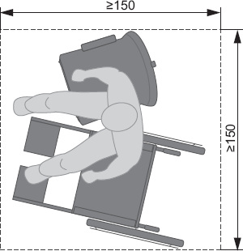
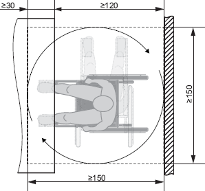

(1) Bei der Festlegung der Grundflächen von Arbeitsräumen sind die besonderen Belange von Beschäftigten mit Behinderungen so zu berücksichtigen, dass sie ohne Beeinträchtigung ihrer Sicherheit, ihrer Gesundheit oder ihres Wohlbefindens ihre Arbeit verrichten können. Je nach Auswirkung der Behinderung ist insbesondere auf Nutzbarkeit der Arbeitsräume zu achten. (ASR A1.2 Pkt. 4 Abs. 1)
(2) Für die Ermittlung der Grundflächen und Höhen des notwendigen Bewegungsfreiraumes am Arbeitsplatz sind in Abhängigkeit von den individuellen Erfordernissen der Beschäftigten mit Behinderungen erforderlichenfalls weitere Zuschläge zu berücksichtigen, z. B. für individuelle Hilfsmittel wie Prothesen, Unterarmgehhilfen oder Sauerstoffgeräte. (ASR A1.2 Pkt. 4 Abs. 3)
(3) In Abhängigkeit von den individuellen Erfordernissen der Beschäftigten mit Behinderungen sind zusätzliche Flächen notwendig, z. B. für persönliche Assistenz, Assistenzhund (z. B. Blindenführhund), medizinische Hilfsmittel oder Elektrorollstuhl. (ASR A1.2 Pkt. 5 Abs. 3)
(4) Für Rollatoren, Rollstühle oder Gehhilfen von Beschäftigten sind gegebenenfalls zusätzliche Stellflächen erforderlich, z. B. im Fall des Umsetzens vom Rollstuhl auf einen Arbeitsstuhl. Sofern Abstellplätze für Rollstühle außerhalb des Arbeitsraumes eingerichtet werden, z. B. im Eingangsbereich, ist für das Umsetzen von einem Außen- auf einen Innenrollstuhl eine Umsetzfläche von mindestens 1,50 m x 1,80 m notwendig. (ASR A1.2 Pkt. 5 Abs. 1)
(5) Wenn sich Beschäftigte am Arbeitsplatz von einem Rollstuhl auf einen Arbeitsstuhl umsetzen müssen, ist eine Bewegungsfläche von mindestens 1,50 m x 1,50 m erforderlich. Die Bewegungsflächen für das Umsetzen dürfen sich mit zusätzlich notwendigen Flächen nach Absatz 3 und zusätzlichen Stellflächen nach Absatz 4 überlagern (siehe Abbildung 1). (ASR A1.2 Pkt. 5.1.1 Abs. 2)

Abb. 1: Mindestgröße der Bewegungsfläche für das Umsetzen am Arbeitsplatz (Maße in cm)
(6) Für Beschäftigte, die einen Rollstuhl benutzen, muss die Bewegungsfläche bei Nichtunterfahrbarkeit von Ausrüstungs- und Ausstattungselementen mindestens 1,50 m x 1,50 m und bei Unterfahrbarkeit mindestens 1,50 m x 1,20 m (siehe Abbildung 2) betragen. (ASR A1.2 Pkt. 5.1.2)
(7) Für nebeneinander angeordnete Arbeitsplätze gilt Absatz 6, sofern sich zwischen diesen Arbeitsplätzen Trennwände befinden. Sind Trennwände nicht vorhanden, reicht eine Breite der Bewegungsfläche von 1,20 m aus, wenn dabei die Erreichbarkeit des Arbeitsplatzes gewährleistet ist. (ASR A1.2 Pkt. 5.1.4)

Abb. 2: Überlagerung von Stell- und Bewegungsflächen bei Unterfahrbarkeit von Ausrüstungs- und Ausstattungselementen (Maße in cm)
(8) Ergänzende Anforderungen an Flächen für Verkehrswege sind im Anhang A1.8: Ergänzende Anforderungen zur ASR A1.8 "Verkehrswege" und für Fluchtwege im Anhang A2.3: Ergänzende Anforderungen zur ASR A2.3 "Fluchtwege und Notausgänge, Flucht- und Rettungsplan" enthalten. (ASR A1.2 Pkt. 5.2)
Hinweis:
Ergänzende Anforderungen an Flächen an Türen sind im Anhang A1.7: Ergänzende Anforderungen zur ASR A1.7 "Türen und Tore" enthalten.
(9) Für Beschäftigte, die einen Rollstuhl benutzen, muss zur Vermeidung von Ganzkörperquetschungen bei seitlicher Anfahrbarkeit der Sicherheitsabstand mindestens 0,90 m betragen. (ASR A1.2 Pkt. 5.5)